写在开头：今天是香港回归纪念日，围绕着97之后香港电影的未来，杜琪峰创立了银河映像，银河的发展和命运，某种程度上也是香港的一个缩影，在这个历史性时刻 ，我希望通过这篇文章，可以和大家一同思考时代巨轮之下个人的抉择！
-01- 序曲
1997年，香港回归之际。
《一个字头的诞生》上映，这部作品基调灰暗戏谑，镜头运动狂放不羁。
故事结构则是三段式循环叙事，这要比著名的《罗拉快跑》早一年。
它的诞生宣告了银河时代的到来。
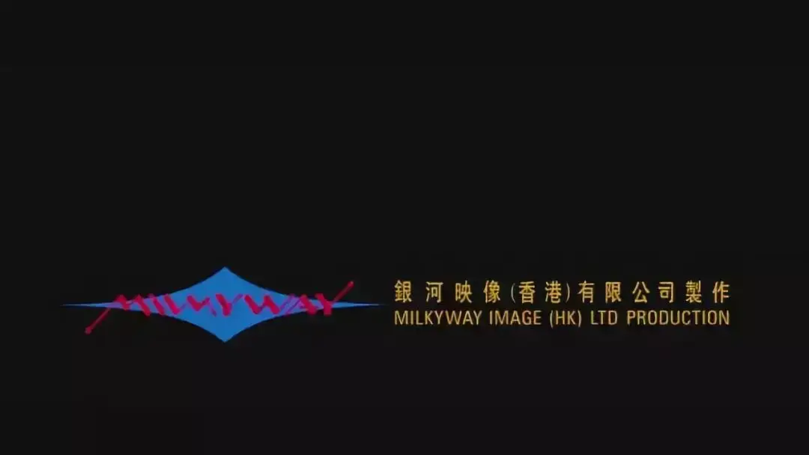
刘青云饰演的黑社会马仔阿狗浑浑噩噩，站在32岁的人生路口前，他充满了迷茫和困惑。
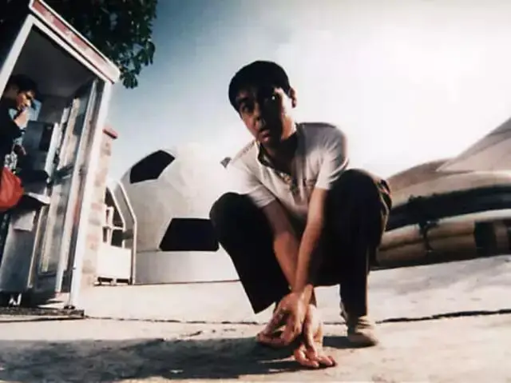
是继续沉沦，还是有所行动？
最终，阿狗决定轰轰烈烈大干一场。
第一个段落，阿狗决定和自己的狐朋狗友组成世纪最强组合勇闯大陆，不大赚一笔誓不回香港。
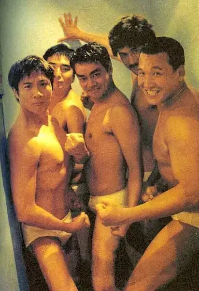
可还没有出发，一个朋友便命丧自己人的车下。
后来，兄弟几人还是乘上了前往湛江的快艇，几个人兴奋地摆造型耍酷，以至于其中一人不小心坠海大喊救命都没有人注意到。
上了岸，才知道一个兄弟已经溺亡大海。
还没有大干一场，两名大将已经殒命，剩下的人决定要偷运黑车，可阿狗身为黑社会却不会开车。
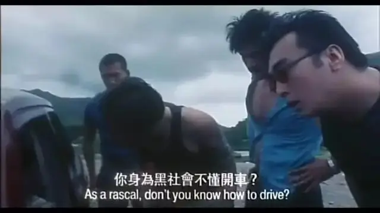
最终，五人迷迷糊糊、跌跌撞撞全部命丧大陆。
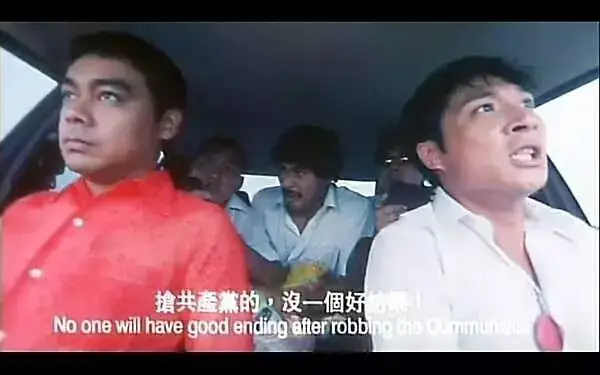
第二个段落，阿狗变得有勇有谋，选择去台湾闯出一片天地，在各种“事故”和巧合之下，阿狗成为了洪门堂口老大。
可无奈的是，阿狗无福享受这份风光，他成为了轮椅上的残疾人。
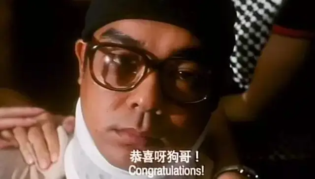
两条道路，各有各的不幸，阿狗再次回到起点，算命的人告诉他：
老实说，这是一个关口，过不了，你就好扑街了；过得了，你连样子都不同啊，是另外一个层次来的。
其实问题不在于此，台湾大陆也不是问题。
问题在于你的心，你的气色乱七八糟，连自己也不知自己在做什么。
富贵失败在于你能否找回自己了，明白吗？要看你自己想做个怎样的人。
明眼的人一定察觉到了这部作品的内涵和隐喻。
面对97年的关口，导演在告诉港人迷茫很正常，可最要紧的是大家要搞清楚自己真正需要什么，要成为什么样的香港。
这部作品也是银河映像真正意义上的开山之作，在香港电影史上，这绝对是一个伟大的“宣言”。
站在港片辉煌不再、一潭死水的关口，面对香港电影资本的流失、电影人才的青黄不接，面对97年的恐慌。
杜琪峰和韦家辉以极大的勇气用这部作品向世界、向自己发出了一个宣言：是的，我们很迷茫、很躁动，可我们决心要创作属于我们自己的电影，我们将直面自己、直面香港，我们将创作出真正的原创港片。
事实也的确如此，银河映像在接下来的二十多年里，用难以想象的坚持和才智守护了港片的尊严，记录了处于迷茫、绝望处境下香港人的精神状态。
而《一个字头的诞生》也基本奠定了银河日后的电影特点，极致风格化的表现形式、黑色幽默、团队英雄主义、对人生的不确定性和难以逃脱的宿命感。
韦家辉、杜琪峰、司徒锦源、刘青云、吴镇宇等组成的银河团队也基本成型。
日后，这个团队将不断壮大，一部又一部的佳作也不断诞生。
相比于大多数充满市侩气息、粗制滥造的港片，银河几乎成为当时期港片佳作的代名词。
而相比于王家卫、许鞍华的“单打独斗”和少产，银河的团队创作和高产更实属难得。
“银河映像，难以想象”，他们绝对配得上刘青云的这句评价。
-02- 宿命
宿命感是银河映像的底色，我将以其为切入点带大家走进银河映像的世界。
在开始之前，有必要对宿命感进行一些澄清。
很多人对这个词没有好感，因为觉得这太过于悲观和灰暗。
可如果你去翻一下世界各国的电影史，你会发现，任何一个国家都曾出现过充满宿命感和不确定性的黑色电影。
而且这些电影往往是在一个时期忽然密集性大量出现，而那个时期往往是社会的动乱期。
比如著名的《马耳他之鹰》、《双重保险》、《日落大道》、《迷魂记》就诞生于二战前后。
电影是一个时代精神的缩影，动乱中，人性里面的恶才会被搅动。
尤其是目睹了那么多的人生惨剧后，道德会失去往日的光泽，鸡汤则“疗效全无”。
于是，充满绝望气息、道德模糊的黑色电影大量出现，这些作品不是为了黑而黑，为了绝望而绝望，而是真真实实地反映了社会的面貌和人性的真相。
如果你经历过文隔，眼睁睁看着几亿人民陷入炼狱，你就会明白为什么那么多知识分子会绝望自杀。
因为除了闭嘴，你什么都做不了。
因此，比起鸡汤，宿命感和绝望更加接近真实，也更有人性。
面对一个婚姻不断失败、四十岁还孑然一身的女人，你告诉他你要努力，她一定会冷冷地暗笑，甚至会白你一眼。
可如果你握着她的手无奈地说“也许你就是孤单命”，可能她会忍不住落泪。
至少，你设身处地感受到了她内心深处的那份孤苦，你虽然没有给她出路，但被人共鸣已是她莫大的安慰。
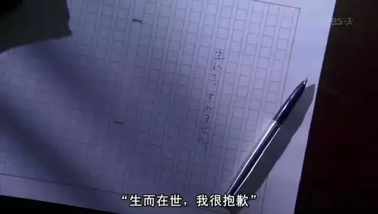
而鸡汤说教在她面前只是对她人生的更大讽刺，是毫无怜悯和同情心的空洞说辞。
因此，有宿命感并不羞耻，也不是软弱，相反，毫无隐藏地发出叹息则更加真实。
那些处于绝望边缘的人，他们不应被嘲笑，他们的处境也不应被忽视，毕竟，那才是有血有肉、充满真实的人生。
-03- 《97》
有了铺垫，我们言归正传。
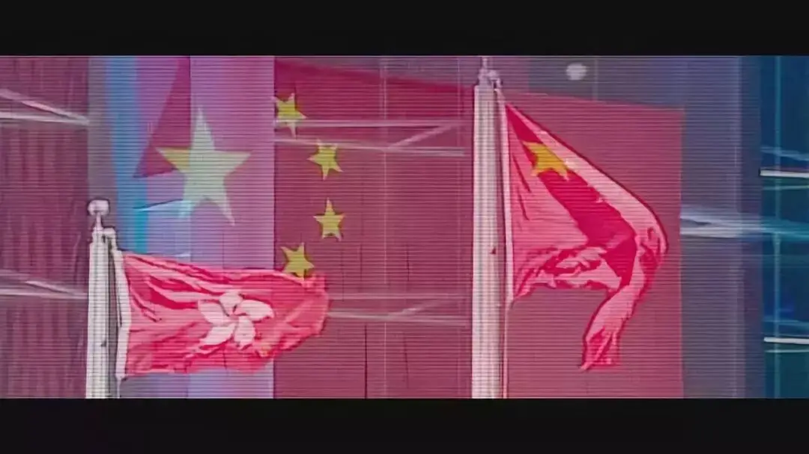
“97”对于港人是一件大事，它直接给银河的创作蒙上了一层灰暗底色。
当年，除了《一个字头的诞生》，银河还有两部很优秀的作品。
一部是游达志导演、杜琪峰监制的《两个只能活一个》，一个没有人生方向、有着强烈自我毁灭倾向的青年。
他为了赌而赌，为了找事而找事，丝毫不顾惜自己所拥有的一切。
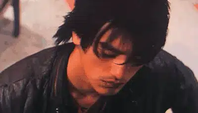
可当他因为一个暗杀任务获得一大笔财富时，他却不敢“欣然赴死”了。
他自己花钱请了一个女杀手来代替自己去执行那个九死一生的任务。
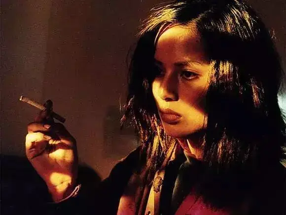
这本不是什么难事，可要命的是，他却不知不觉喜欢上了那个有着悲惨遭遇的女杀手。
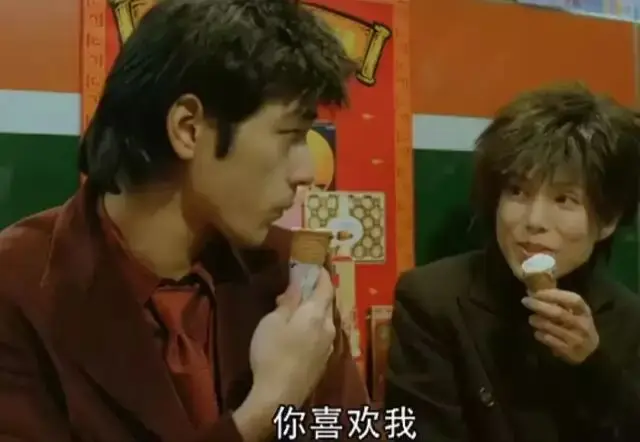
97回归之夜成为他们最短暂、最珍贵的温存时光。
因为，第二天，他们必须要一个人选择“赴死”。
那一晚，两人被人潮挤开并渐行渐远，女杀手问他“我们如果走散，要什么时候才能再碰头？”。
男人不禁神情恍惚。
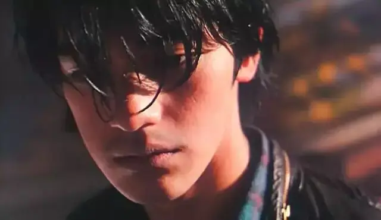
令他惆怅的不仅是明天的选择，还有对生离死别的恐惧。
这个可爱、戏谑又充满了黑色幽默的故事很精准地抓住了当时港人的心态。
另一部作品，则是曾谨昌执导的《恐怖鸡》，这是一部让人后背发凉的作品。
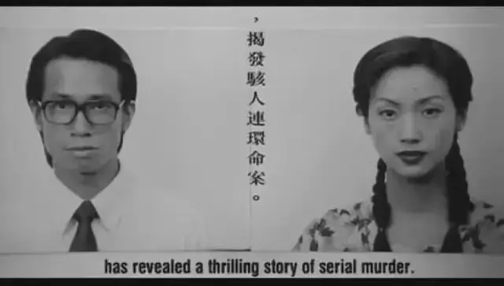
吴倩莲饰演的大陆妹为了一个香港身份证残忍杀害五个无辜的人。
这部作品强烈地表达了港人对于自己“身份”被换的担心和惧怕。
1998年，游达志的黑和冷更是走向了极致。
《非常突然》全片90分钟，前84分钟，刻画了一帮英勇的警察和一段朴素迷离的三角恋。
他们彼此配合默契，并一同制服了一群悍匪。
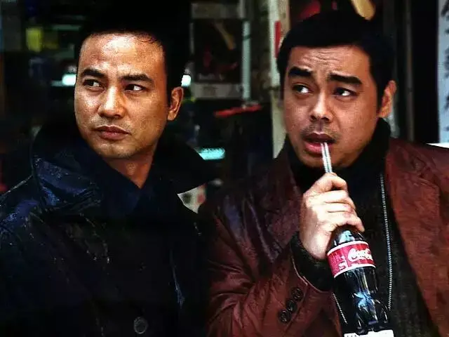
可在电影最后4分钟里，他们却在一次普通的出警中被四个瞧不上眼的匪徒全部杀死。
电影的结尾冷酷至及，没有给主角和观众任何希望和幻想。
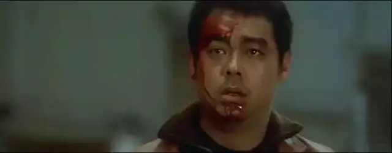
“有伞的时候没雨，有雨的时候就没伞，生命有太多不可知”，这部作品以一种艺术的夸张表达了人生的不确定性和悲剧性。
而另一部《暗花》则是银河映像中最绝望、最宿命的作品。
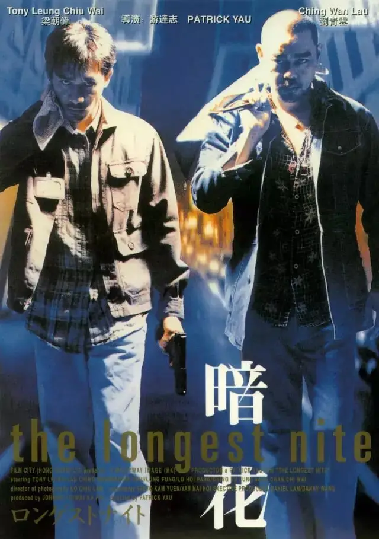
两个有勇有谋的人被置身于洪先生老谋深算的棋盘之下，梁朝伟饰演的阿深自以为可以把控一切，对人人都害怕的这个八十多岁老头不屑一顾，坚信“过了今晚，一切都会好”。
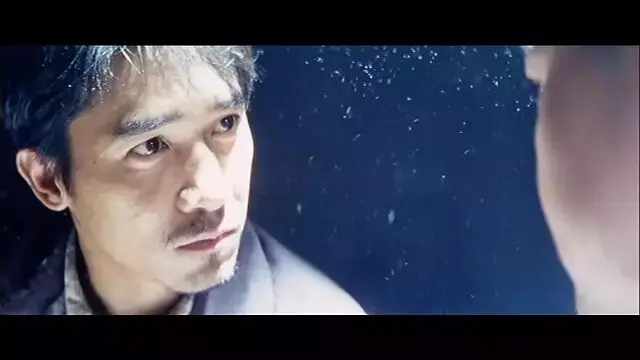
而刘青云饰演的耀东则自知自己只是一个棋子，但他甘心如此，因为他明白他根本无法挑战和逃离这盘大棋。
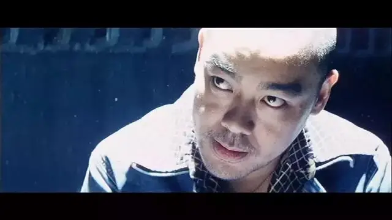
就这样，仅仅一个夜晚，已经认命的耀东尸首异处，而自命不凡、坚信人定胜天的阿深终于明白什么叫无能为力，什么叫绝望。
原来，如果没有“超越性”的看见，人生开始于鸡汤，结束于宿命，这就是作为人的脆弱和悲剧。
-04- 放逐
98年后银河的风格开始变暖，这既是出于商业上的考虑，更多则来自于银河映像掌门人杜琪峰的影响。
杜琪峰是一个现实主义上的浪漫主义者，他曾说过“自己的文化修养不好，但比较擅长处理具体的处境”。
因此，大如97，小如炒股、买房，杜琪峰都在竭力刻画着处于具体困境中人们的状态，不过他并没有转向很强的宿命论，而是在绝境处寻觅着银河的诗意和希望。
事实上，即使在灰暗的97年，杜琪峰导演的《十万火急》依旧燃烧着强烈的激情和斗志。
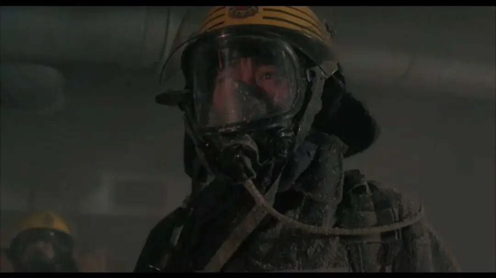
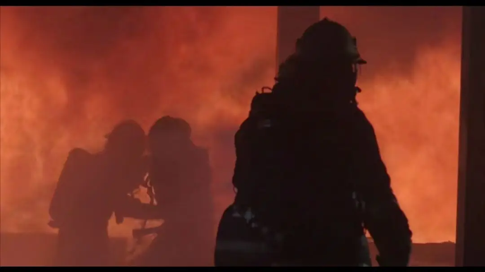
这是银河团队的一次集体亮相。
戏里消防队奔入熊熊大火，以极大的勇气完成了对他人的救赎和对自己的救赎，这部电影充满了集体英雄主义气息。
而在戏外，银河团队面对的挑战不比火灾轻松，当时预算有限，而这部作品涉及很多大场面以及危险的火灾现场。
不仅拍摄难度大，更具挑战性的是，很多镜头必须要一次性过，否则再没有时间和财力来重拍火灾场景。
“十万火急下”，银河团队合作有序，演员更是直接穿行在真实的火场中，多年后杜琪峰回忆起当时的拍摄情景，都不禁感到一股力量和感动。
据说，刘青云随口那句“银河映像，不可想象”便是在《十万火急》拍摄现场说的。
而如此宝贵的团队情谊也直接影响了银河的创作。
在银河的作品中，几乎没有一部作品是只有一个主角的，最少的也是《暗战》、《暗花》、《真心英雄》里的双主角，更多的是《枪火》、《放逐》、《复仇》的集体亮相。
这既成为银河作品的独特标贴，同时更加说明这个团队中每个人不可或缺。
后来出走的游达志和曾谨昌再无佳作，便更证实了银河创作团队的重要性。
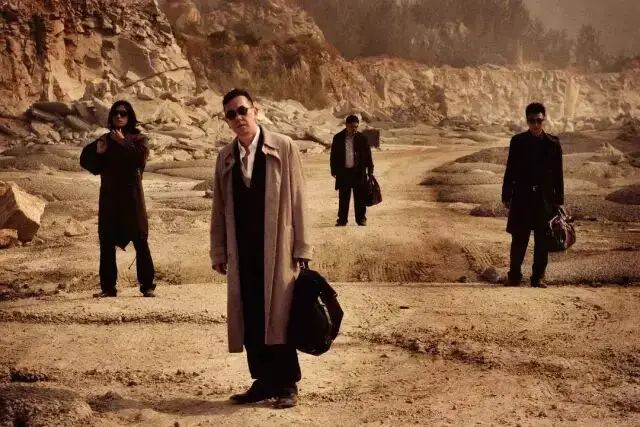
到了1999年，银河映像有两部重要的作品问世。
第一部是19个工作日便拍摄完成并横扫各种大奖的《枪火》。
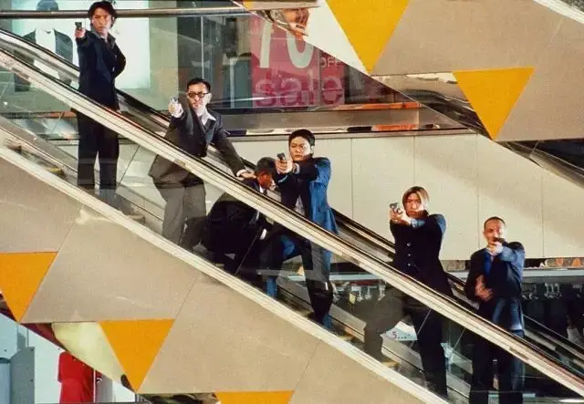
这依旧是关于处境的作品，一个老大被人追杀，于是临时组建了一个保镖团队。
他们都是一群桀骜不驯的人，在共同经历了枪林弹雨后，他们成为了最亲密无间的朋友。
紧接着，这个团队将面临一个最大的挑战，老大下命令要他们杀死其中一个兄弟。
他们将如何面对？
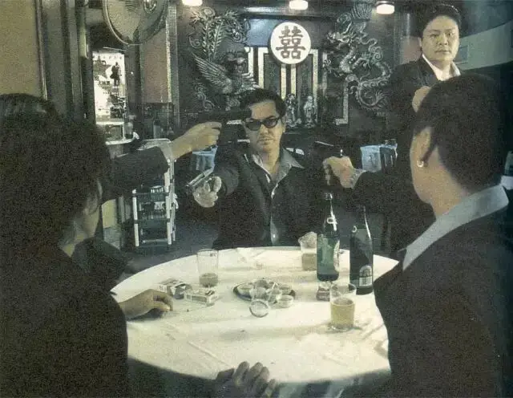
这部作品台词极少，杜琪峰却用动作、造型以及空间走位刻画了几个人的性格特点，比如最著名的商场枪战。
几个人的站位、走向以及反应不仅酷意十足，还很好地刻画了人物的性格。
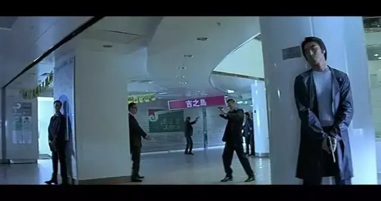
黄秋生饰演的阿鬼经验最老道，他躲在最隐秘的角度暗中观察一切。
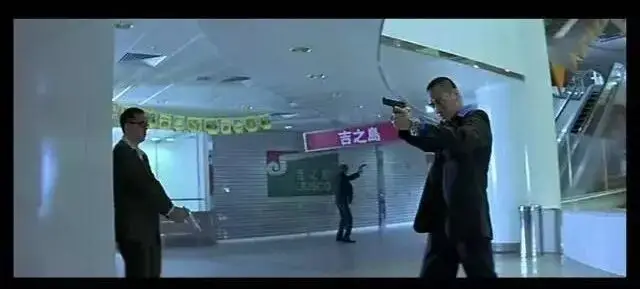
吴镇宇饰演的阿来最勇猛，他仿佛前锋一样最先冲出阻挡物，将自己暴露在敌人面前。
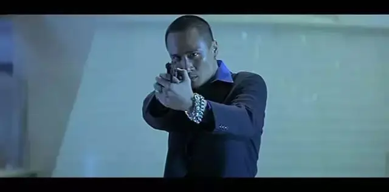
张耀扬饰演的阿mike相当冷静，且枪法了得，他在枪林弹雨中的持枪最为专注。
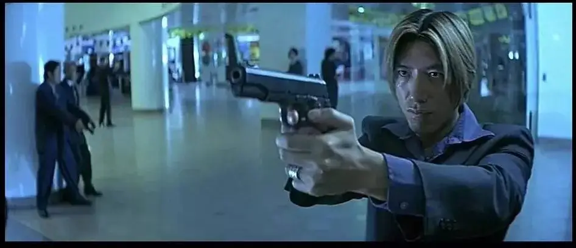
而吕颂贤饰演的阿信则有些年轻莽撞，动作略有夸张和毛躁，神情也最为慌张。
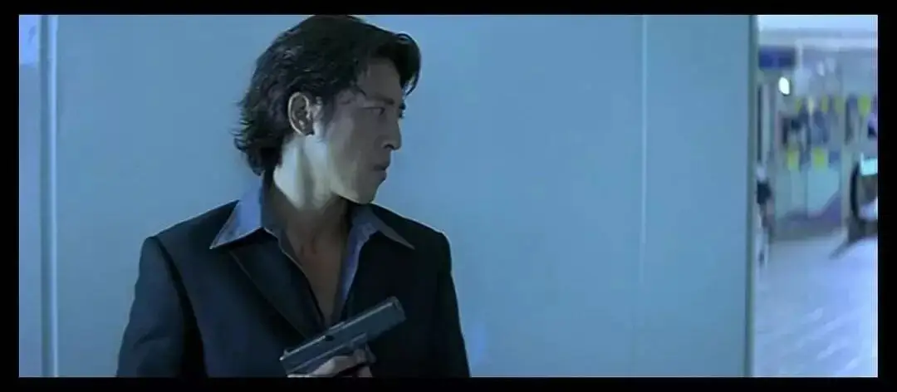
林雪饰演的阿肥则较为细心谨慎，他是一个后卫，总是在慌乱中守护着自己的保护对象。
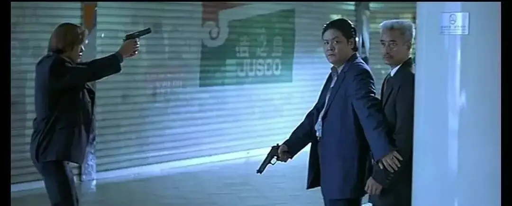
而五人的站位和视线又彼此保护，正是这样的团队很快便完成了任务。
那种动作上的默契，眼神上的互通，语言上的风趣以及时不时冒出来的黑色幽默充满了男人之间的酷劲与诗意。
△《枪火》精彩片段
除了团队的英雄，氛围的营造、冷静对峙的暴力也都成为银河映像的重要风格。
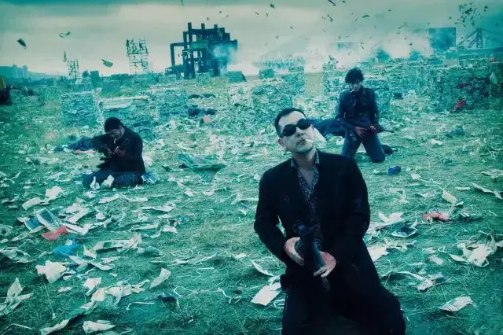
之后的《放逐》和《复仇》则是《枪火》的延续，只是要更加悲壮一些。
《ptu》则是发生在夜晚的《放逐》，因为是夜色，自然调子和情绪要比《枪火》冷一些。
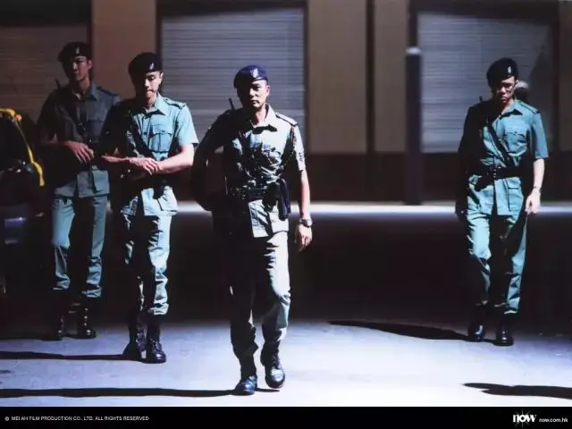
1999年另一部重要作品就是《暗战》。
刘德华饰演的主角身患绝症，这本是一件非常绝望的事情。
面对这个困境，刘德华和警察玩了一个三天的游戏，在这惊天动地的三天里，刘德华不仅为父报了仇，还收获了一段惺惺相惜的友情和一段短暂朦胧的爱情。
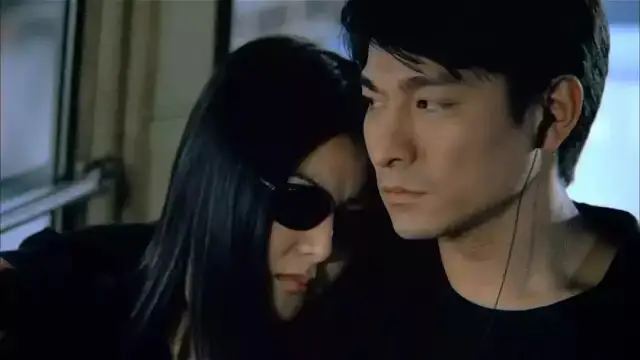
《暗战》将漫长的人生浓缩为三天，让观众以最快的方式感受了人生的悲欢。
这像一场美丽的烟花，绽放时充满了生命的精彩，凋零和逝去时令人不禁感伤，但这种哀伤不是绝望，而是一种充满祝福和释然的告别。
这份浪漫的顶点是《柔道龙虎榜》，这部电影节奏很慢，前面很颓，年轻人很难感受到其中的味道。
可如果你曾经遭遇了事情，并且有过消沉度日的经历，那么这部作品一定会让你非常感动。
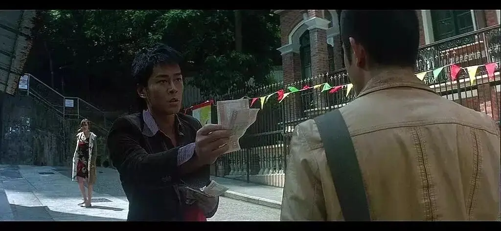
古天乐饰演的司徒宝是个柔道天才，可不幸的是他患有眼疾，司徒宝因此变得斗志全无、一卷不振。
他成为了一个烂赌烂醉之人，因为他的人生失去了努力前进的动力和意义。
可在一场逃亡中，司徒宝看着一个女主抱着一堆钱拼命奔跑的时候，他感受了那种生命的悸动，那是一种久违的、令他内心澎湃的东西，司徒宝终于恢复了生命的知觉，成为了“姿三四郎”。
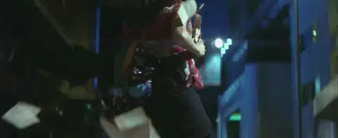
这就是杜琪峰的坚持，也是银河一直往前走的力量。
风雨中奔跑，困顿里坚持
宿命中仍然怀有希望
-05- 进击
银河映像诞生于97。
特殊的时代背景给了银河不一样的色彩，97的影子或多或少一直伴随着银河，要么以一种近乎无意识的隐秘方式藏在一个又一个的故事中，要么直接出现在故事场景中。
但毫无疑问，当这个“影子”加重的时候，银河的作品就会走的比较“黑”和“冷”，宿命气息会再次加强。
2004年，距离香港回归10周年还有三年，杜琪峰一直密切关注着香港的变化，当时社会上对于2007年是否会普选莫衷一是。
杜琪峰自己心底里对这件事是比较悲观的，认为这不太可能实现，正是这样的背景下，银河映像创作了一部作品，英文名字直接叫《election》。
这部电影的中文名字就是著名的《黑社会》，曾代表香港电影在戛纳角逐金棕榈大奖，被影迷看为是香港版的《教父》。
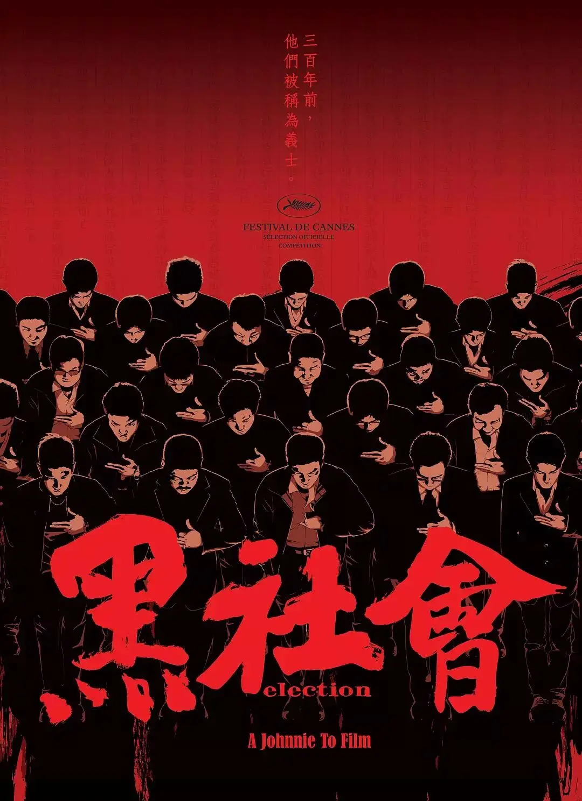
本片区别于传统香港黑帮片的江湖义气和打打杀杀，它讲述了一个黑社会搞选举的故事。
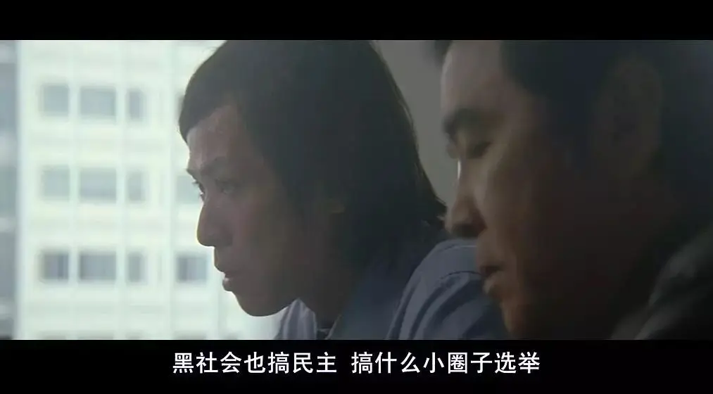
香港黑帮“和联胜”每两年就会选举一次话事人，故事发生在选举前夕，两大区域的老大阿乐和大D要争夺话事人的位置。
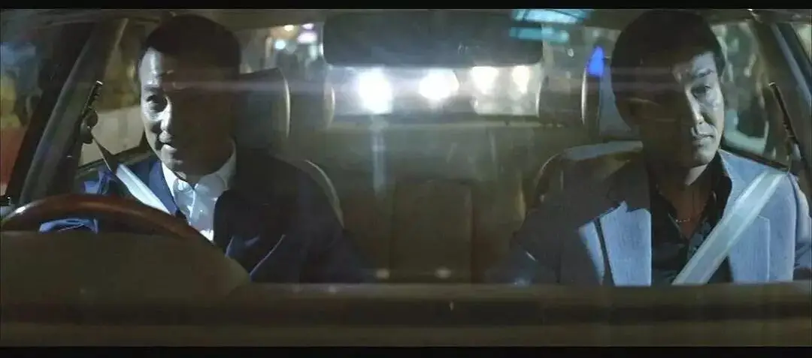
表面上，大家满嘴江湖道义，程序上也会按照公开的选举来。
可私底下大家明争暗斗、拉帮结派、分化暗杀，为达目的不择手段。
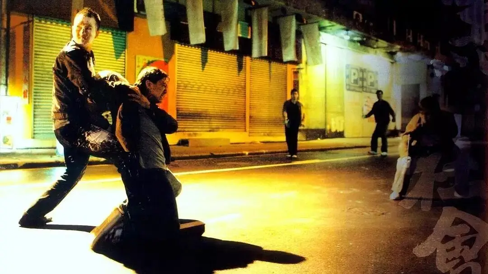
而有选举权的长辈虽然看上去刚正不阿，事实上，每个人心中都有自己的小算盘，都是在趋利避害。
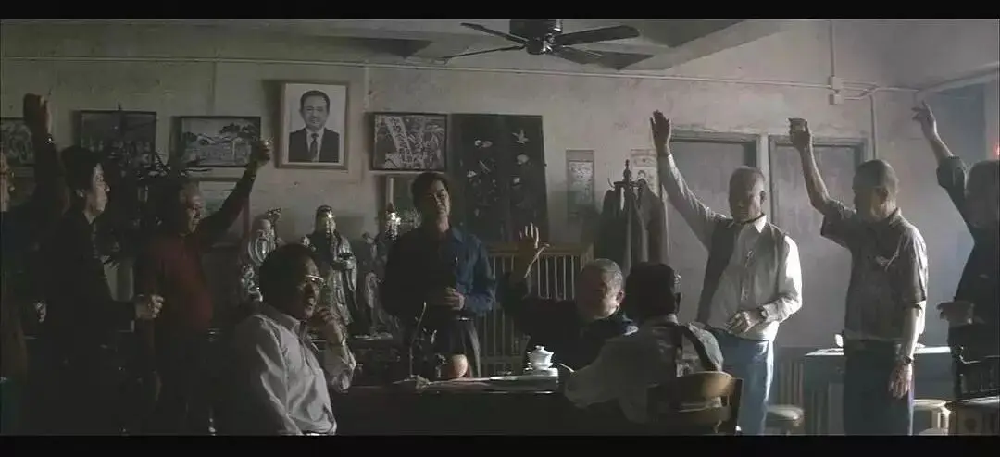
这俨然就是一个黑社会政治生态，里面充满了各种对抗和张力，比如说新人对旧秩序的挑战，帮派与帮派之间、警察与黑帮之间的对抗和平衡，还有随时会从背后冲出来的砍刀。
这一切都让人不得不屏着呼吸看到最后。
而结尾的长镜头绝对可以列入电影史中最暴力的镜头之一，性子刚烈、直接的大D还是死于表面儒雅、内心阴狠的阿乐手上，一次次举起又砸下去的石头没有半点怜悯和犹豫。
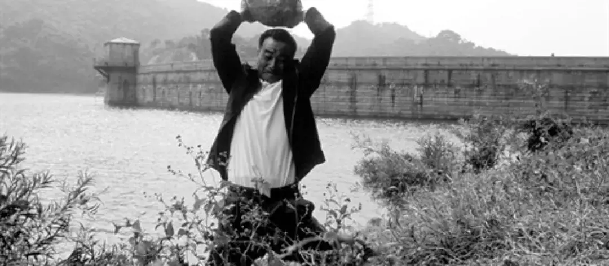
什么仁义道德，什么洪门誓言，什么共进双赢，这些都是表演给别人看的东西，在这里只有你死我活和胜者为王。
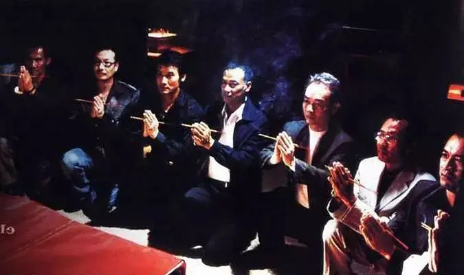
之后，银河映像继续推出了《黑社会2：以和为贵》，相比于第一部的政治反讽，这一部的政治表达则更强。
这场黑社会的选举游戏中加入了更大、更隐蔽的“boss”，他在后面操纵了一切。
这部作品其实依旧延续了《恐怖鸡》中港人的恐惧。
所不同的是，这一次，你已经入局，而且没有任何选择！
相比于银河97时懵懵懂懂、充满不确定的表达，《黑社会》系列是银河对香港未来较为直接的思考，这两部作品是银河创作中最有格局、最有公共表达性的作品。
同时也是我们最不能多讲的作品。
-06- 树大招风
《黑社会》后，银河陆续创作了《神探》、《文雀》、《夺命金》等优秀作品。
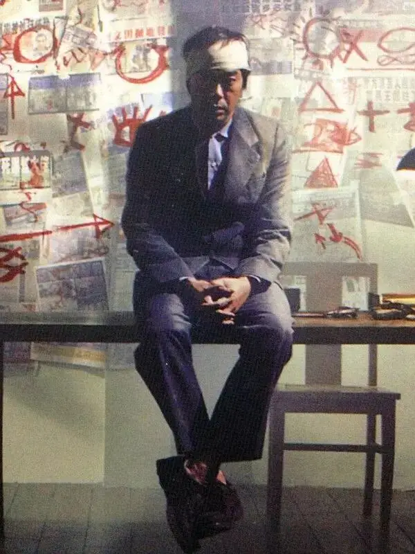
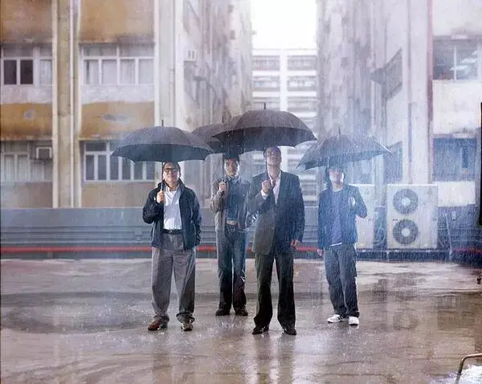
2011年，一直坚持立足本土的银河终于也不得不选择北上，开始进军大陆院线。
在接下来的六年里，除了《毒战》和《盲探》勉强及格，银河再没有交出一部上乘之作。
这在银河的创作生涯中还是头一次！
为什么？
杜琪峰在纪录片《无涯》中无奈地说“因为审查问题，这么多年自己一直没有进步”。
直到2016年的《树大招风》，银河给了自己、给影迷、给香港电影和大陆市场一个交代。
这是银河唯一一部没有高潮的作品，也是情感最为复杂微妙的作品。
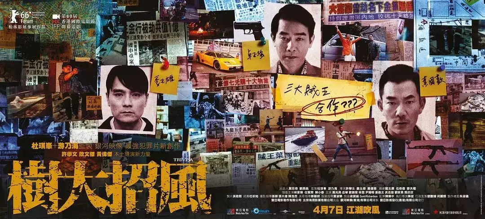
电影以1990年代香港“三大贼王”张子强、叶继欢与季炳雄的犯罪经历为基础进行了改编，讲述了三大贼王欲合作干一场大案的故事。
想一想都知道这必将是轰动全世界的大事，可尽管山雨欲来风满楼，三大贼王和观众始终没有等来那场大戏和高潮。
张子强、季炳雄纷纷在大陆落网，而叶继欢直接命丧香港。
这部电影依旧充满了宿命和不确定性，依旧有“香港身份”问题。
只不过相比于银河起初《一个字头的诞生》中用宿命论表达恐惧，中期《黑社会》中用宿命论表达悲观预期。
《树大招风》中的宿命是真正的结局，它表达的是穷途末路的绝望和无奈。
我们从中再难看到天马行空的想象，听不到肆意妄为的笑声，看不到枪火四射的大场面，更体会不到那股誓要扭转乾坤的气力。
电影刚开始，昏暗的旅馆中，季炳雄（电影中的名字叫季正雄）神情默然地抽着烟，背景中的电视播放着97回归的新闻画面。
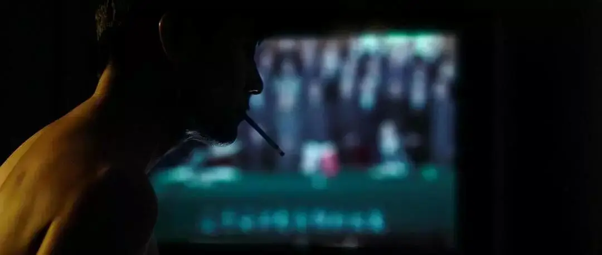
紧接着，季炳雄将自己的香港身份证烧掉。
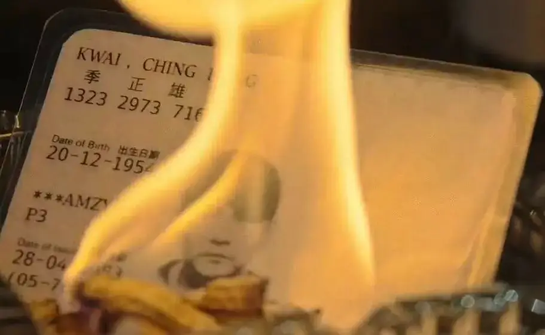
以往的97还有迷茫，《树大招风》中的97没有迷茫，上来就选择认命，没有一丝丝挣扎，这是真正的宿命。
不必再畏惧什么“身份”问题，这一次他们选择了自戕。
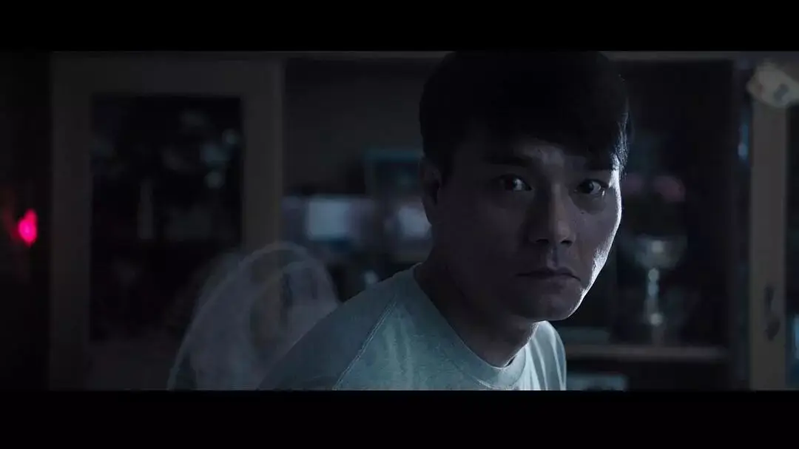
第一次！我在银河的作品中强烈地感受到了他们的疲惫，那是一种拼尽全力仍然无济于事并最终放弃挣扎的无力感。
剩下的只有郁积于心的遗恨和到处隐姓埋名、摸爬滚打的窝囊生活。
这部作品最触动我的是叶继欢，他的遭遇基本上就是杜琪峰和银河的翻版。
叶继欢曾在香港街道拿着AK47和别人火拼，他也因此而声名大噪，成为路人皆知的悍匪。
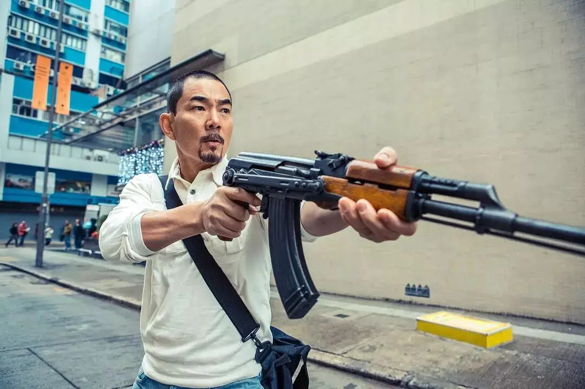
后来，他为了稳定的生活和出路，开始洗白自己的身份并北上大陆做生意。
刚开始，他对自己的事业信心满满。
可令他想不到的是，迎接他的是无尽的羞辱和挫败。
曾经不可一世的悍匪为了一个营业执照便对别人低头哈腰，强忍着无奈醉倒在一场又一场饭局中。
可尽管如此，自己的货不仅屡次被查，还直接被抢，一个人人都害怕的悍匪竟然被别人抢劫！
这是多大的笑话。
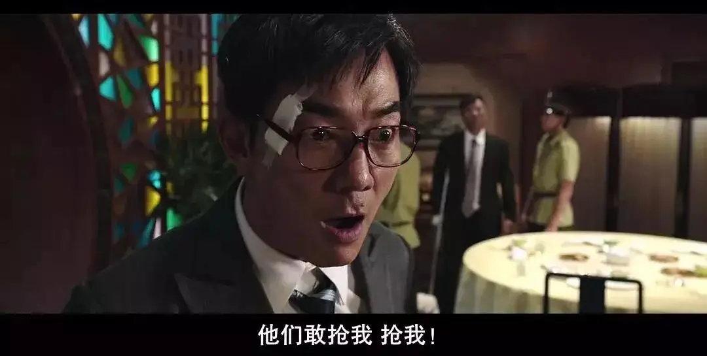
但他别无选择，只能一次又一次将自己的热脸贴在别人的冷屁股上。
那种窝囊样就连自己的小弟都瞧不起他。
终于，叶继欢忍无可忍，决心操起AK47重新走回香港的街头，可一入香港，便被当地警察质疑是大陆客。
羞愤之下，叶继欢完全失去理性发了狂一样地报复警察，并最终含恨暴尸街头。
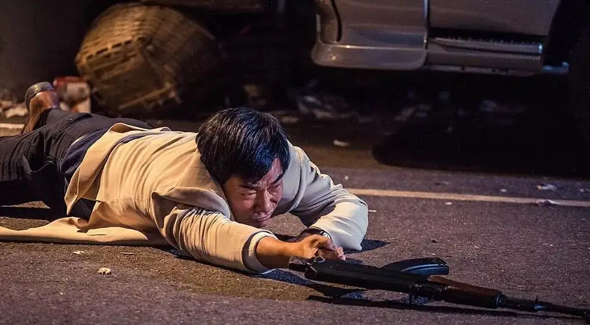
这不正是北上的杜琪峰么？
为了生存，他们放弃自己熟悉的一切，离开了午夜四点的广东道，走出了香港的冰室，希望北上获得成功。
可作品不仅失了原有的魂，还不能接大陆的地气，最要命的还要为了过审改来改去。
大陆的观众不买单，香港的观众说不认识这样的银河。
个中的滋味和苦衷只有银河自己知道，怪不得杜琪峰北上后经常辗转难眠。
因此，《树大招风》里的宿命是银河对自己的暗嘲，里面写满了心力交瘁的无奈和苦苦坚持的心酸。
有人因为同一年的《三人行》而嘲笑银河走向了下坡路，这是一句很没同情心的话。
如果你在《树大招风》里看到了那个60多岁老人的倦容，你怎么忍心说出这样残忍的话。
也许我们将来再也看不到银河更优秀的作品，但谁都不能轻易否认银河的成就和坚持。
一部好电影的诞生远没有我们想的那么简单，它需要太多的条件。
没有好的作品并不代表银河已经没落，那苦苦坚持的身影和踽踽前行的步伐本身就是香港电影的奇迹。
更何况，《树大招风》的存在证明银河宝刀未老。
-07- 银河意志
廉颇老矣，尚能饭否？
杜琪峰是已不再年轻，后面能够看到杜琪峰直接操刀作品的机会越来越少 ，但是廉颇会老，但是他的“鸿鹄之志”却一直在传承！
作为香港电影倔强的坚持者，北上之前，杜琪峰创办了“鲜浪潮”本地短片竞赛，为电影新人提供制作支持和资金支持，并提供崭露头角的机会。
从创立至今，已经整整18年。
18年已经是一代人，这种长期主义的人才培养，能在如此商业的香港坚持这么久实属难得。
在“鲜浪潮”中，拍摄出《正义回廊》的何爵天，以及最近大热入围金马影展的《年少日记》导演卓亦谦，都曾受益于鲜浪潮。
18年，杜琪峰老了，但是他已经培养出一批新的电影人才。
他们延续着银河对话时代的精神，继续对具体处境下的个体进行深情关注和表达。
从我去年来到香港，看到的一些新作品，我想说的是，香港电影并未没落，而正以一种区别于我们过去所熟悉的那种高娱乐性的新姿态而存在，现在有了更多严肃表达。
但是挑战一直存在，鲜浪潮近年来也在不断面临电影审查和资助上的变化。
杜琪峰表示“尽管往后会面对更多考验及困难，鲜浪潮仍不懈探索及开发资源...秉持培育年轻电影创作者的信念，持续发展，一如电影创作，迎难而上，克服一切阻力。”
时代巨轮从未停下，但是作为其中的个体，最不应该丧失的是那种具体的、真实的个人表达激情。
而银河做到了。
如果有一天，当我们在宏大叙事中感到空洞和迷茫时，银河的作品一定会带给我们启迪和思考。
-END-
推荐阅读
▼
（点击文字即可获取全文）
即使看了那么多港片，没有这一部，依旧难懂香港
这里没有挑逗你眼目情欲的小鲜肉
也没有挑动你肉体情欲的段子
更没有膨胀你今生骄傲的鸡血
我们只在乎那些最质朴真诚的作品
在那里我们才能恢复真正的想象力
我们也坚信这才是我们真正需要的

ID:Six_hundred_hits
长按二维码，一键关注
【六百击】
-END-
电影评论
尽情分享朋友圈